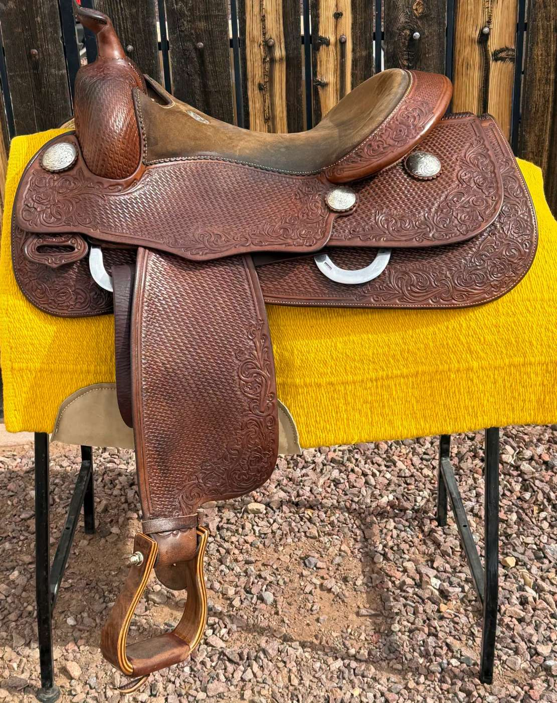

Shop New
New Reining Saddles


Shop New
Shop Used



David Solum brings decades of saddle expertise and deep NRHA community connections to offer a curated marketplace of certified pre-owned reining saddles. Every saddle is personally inspected and backed by a quality guarantee.
Browse Certified Used →